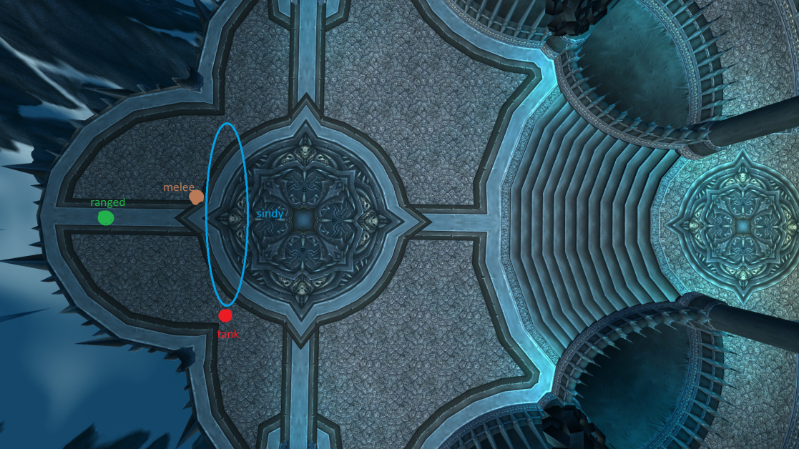
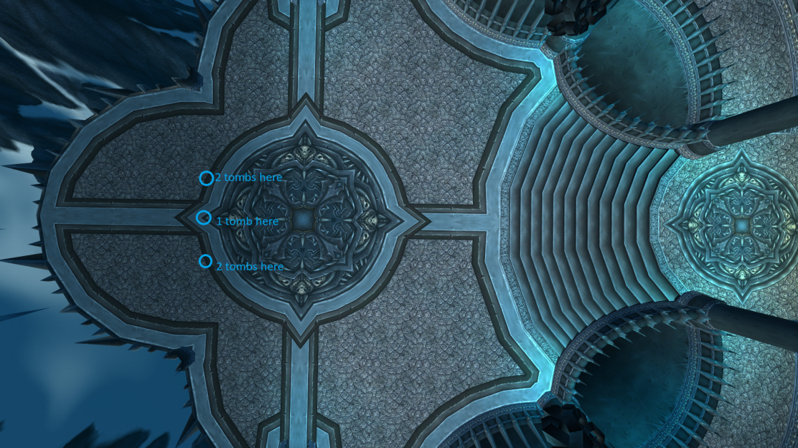
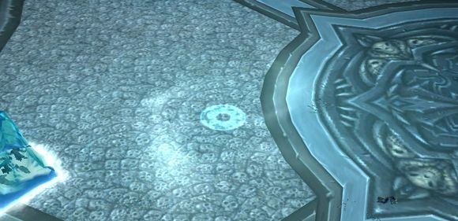
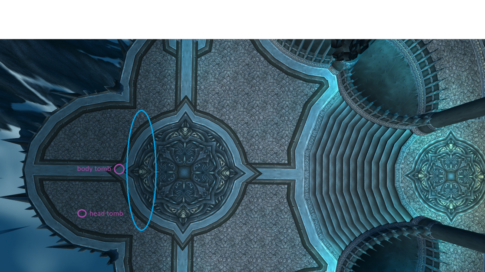

En mi opinión, esta es la pelea más justa del juego, ya que todos salen igualmente perjudicados.
Esta pelea tiene 2.5 fases.
Aura de Escarcha (Frost Aura): Hace daño a todo el equipo. Cúrense.
Habilidades de Dragón:
Frío Virulento (Blistering Cold): Todos serán atraídos hacia Sindragosa, quien empezará a canalizar una habilidad llamada Frío Virulento. Al terminar, causará daño en área a todos dentro de 25 yardas, así que todos deben alejarse lo más rápido posible.
Escalofrío Penetrante (Permeating Chill): Es un efecto de daño en el tiempo (DoT) que tiene una probabilidad de aplicarse al golpear a Sindragosa con un ataque cuerpo a cuerpo, llamado Congelado hasta los Huesos (Chilled to the Bone). Los DPS de melé pueden acumular muchas cargas, pero si se acumulan en exceso (10 o más), deberían usar una habilidad defensiva (Muro de Escudo, Burbuja, Capa de las Sombras, Piel de Corteza, etc.). Es especialmente importante usar defensivos cuando tienes muchas cargas y eres atraído por un Frío Virulento, ya que los sanadores no podrán detenerse a curarte.
Magia Desencadenada (Unchained Magic): DBM anuncia cuando se lanza. Es un debilitador de 30 segundos que se aplica a 3 sanadores y 3 DPS mágicos en modo 25 jugadores. Cada vez que lanzas una habilidad, ganas otro debilitador llamado Inestabilidad (Instability). Cada carga de Inestabilidad te hace daño cuando expira el debilitador. En la Fase 1, puedes llegar a tener hasta 10 cargas sin problemas, pero en la Fase 2 no deberías arriesgarte tanto porque los sanadores estarán ocupados. Los Sacerdotes de las Sombras pueden acumular más cargas ya que pueden usar Dispersión.
Si se aproxima un Frío Virulento o la Fase Aérea, asegúrate de no tener cargas de Inestabilidad; deja que expiren antes de ser atraído o atrapado en una tumba.
Sindragosa volará al aire, a una posición en la que los DPS de rango no podrán atacarla. Esta fase ocurre dos veces por combate; si sucede una tercera vez, el grupo se enfrentará a un enrage (rabia).
Después de volar, lanzará Tumbas de Escarcha sobre 2 jugadores en modo 10 jugadores, o 5 en modo 25. Estos jugadores deben moverse a posiciones predeterminadas: 2 tumbas apiladas a la izquierda, 2 a la derecha y 1 al centro. Es importante no apilar 3 tumbas una sobre otra, ya que podrían morir rápidamente.
Cualquiera que esté cerca de la tumba cuando aterrice también será congelado, así que mantente alejado de las tumbas.
Como deberías posicionarte normalmente:
!
Como deberías posicionarte en la fase aérea
!
Bomba de Escarcha:
!
Después de cuatro bombas, Sindragosa bajará, rompe las tumbas y vuelve a DPSear a Sindragosa.
En esta fase, ya no habrá Fase Aérea, pero todas las habilidades de la Fase 1 seguirán aplicándose.
La secuencia de tumbas sigue un orden predeterminado, alternando entre el lado del cuerpo y el lado de la cabeza de Sindragosa. El primer y segundo conjunto de tumbas se colocan en el lado del cuerpo, el tercero en el lado de la cabeza, y así sucesivamente.

En algún momento, las tumbas deben morir, pero no solo hay que matarlas sin pensar. Quieres tener una tumba en el cuerpo lista para cuando se esté por producir un Frío Desgarrador, así los DPS a distancia no serán atraídos.
La primera tumba va hacia el cuerpo y la destruimos al instante.
La segunda tumba va al cuerpo y la MANTENEMOS, no la matamos porque un Frío Desgarrador sucederá poco después de que la segunda tumba aterrice. Matamos esta tumba DESPUÉS de que termine el Frío Desgarrador, no durante el lanzamiento ni antes, sino después.
Dado que la segunda tumba está en el cuerpo, la tercera tumba necesitará ir a otro lugar que no sea el cuerpo, por eso existe la posición en la cabeza. La segunda tumba irá allí y deberá ser destruida después del Frío Desgarrador. Como la persona que tiene la tercera tumba se alejará de la tumba del medio, no podrá tener línea de visión del Frío Desgarrador y podría ser atraída hacia el grupo de melé antes de que la tumba aterrice si el tiempo es malo, así que dale Protección Divina (HoP) a esa persona, eso evitará que sea atraída.
Después del Frío Desgarrador, mata ambas tumbas.
Tratamos la cuarta y la quinta tumba igual que la primera.
La sexta tumba es igual que la segunda (MANTENLA).
La séptima tumba va a la cabeza.
Después del Frío Desgarrador, matamos las tumbas sexta y séptima.
Si el jefe está al 10% de vida o menos y no tenemos más acumulaciones de Sacudida Místico, la gente se irá a China/África, lo que significa que se alejarán del grupo, no importa dónde, solo salgan, no mataremos estas tumbas, simplemente nos enfocaremos en matar al jefe y esperaremos que lo logremos.
Si el jefe está al 10% o menos pero aún tenemos algunas acumulaciones de Sacudida Místico, tendremos una tumba más en el cuerpo, todos deben estar detrás de esta tumba ya que estaremos eliminando las acumulaciones de Sacudida Místico. Después de eliminar las acumulaciones, matamos la tumba y atacamos al jefe con todo.
Si el jefe todavía está por encima del 10% de vida, continuaremos haciendo tumbas hasta alcanzar el 10% de vida. Si no logramos bajar al jefe en las próximas 2 tumbas, probablemente fracasaremos por enrage.